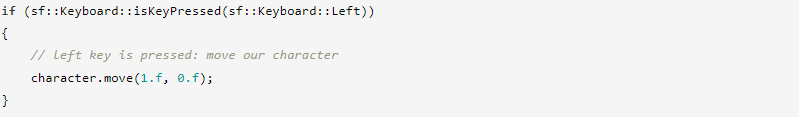
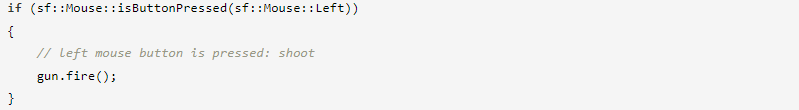
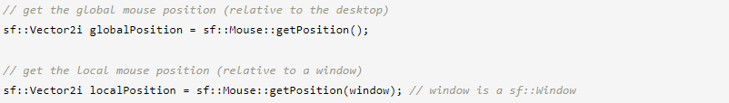
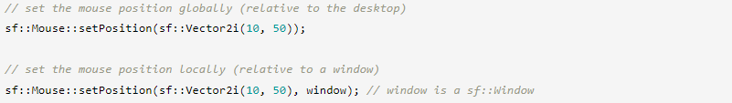
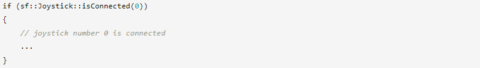
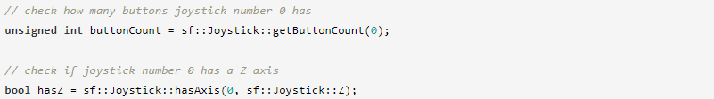
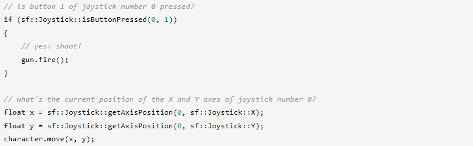

В этом руководстве объясняется, как получить доступ к глобальным устройствам ввода: клавиатуре, мыши и джойстикам. Это не следует путать с событиями. Ввод в режиме реального времени позволяет запрашивать глобальное состояние клавиатуры, мыши и джойстиков в любое время («эта кнопка нажата в данный момент?», «где в данный момент находится мышь?»), а события уведомляют вас, когда что-то происходит («эта кнопка была нажата", "мышь сдвинулась").
Класс, предоставляющий доступ к состоянию клавиатуры, называется sf::Keyboard. Он содержит только одну функцию isKeyPressed, которая проверяет текущее состояние клавиши (нажата или отпущена). Это статическая функция, поэтому вам не нужно создавать экземпляр sf::Keyboard для ее использования.
Эта функция напрямую считывает состояние клавиатуры, игнорируя состояние фокуса вашего окна. Это означает, что isKeyPressed может возвращать значение true, даже если ваше окно неактивно.
Коды клавиш определяются в перечислении sf::Keyboard::Key.
В зависимости от вашей операционной системы и раскладки клавиатуры некоторые коды клавиш могут отсутствовать или интерпретироваться неправильно. Это то, что будет улучшено в будущей версии SFML.
Класс, предоставляющий доступ к состоянию мыши, называется sf::Mouse. Как и его друг sf::Keyboard, sf::Mouse содержит только статические функции и не предназначен для создания экземпляров (на данный момент SFML обрабатывает только одну мышь).
Вы можете проверить, нажаты ли кнопки:
Коды кнопок мыши определены в перечислении sf::Mouse::Button. SFML поддерживает до 5 кнопок: левую, правую, среднюю (колесико) и две дополнительные кнопки, какими бы они ни были.
Вы также можете получить и установить текущую позицию мыши относительно рабочего стола или окна:
 Нет функции чтения текущего состояния колесика мыши. Поскольку колесо можно перемещать только относительно, у него нет абсолютного состояния, которое можно было бы запросить. Глядя на клавишу, вы можете сказать, нажата она или отпущена. Глядя на курсор мыши, вы можете сказать, где он находится на экране. Однако взгляд на колесико мыши не говорит вам, на какой «галочке» оно стоит. Вы можете получать уведомления только при его перемещении (событие MouseWheelScrolled).
Класс, предоставляющий доступ к состояниям джойстиков, называется sf::Joystick. Как и другие классы в этом руководстве, он содержит только статические функции.
Джойстики идентифицируются по их индексу (от 0 до 7, поскольку SFML поддерживает до 8 джойстиков). Следовательно, первым аргументом каждой функции sf::Joystick является индекс джойстика, который вы хотите запросить.
Вы можете проверить, подключен ли джойстик или нет:
Вы также можете получить возможности подключенного джойстика:
Оси джойстика определены в перечислении sf::Joystick::Axis. Так как кнопки не имеют особого значения, они просто пронумерованы от 0 до 31.
Наконец, вы также можете запросить состояние осей и кнопок джойстика:
Состояния джойстика автоматически обновляются при проверке событий. Если вы не проверяете события или вам нужно запросить состояние джойстика (например, проверить, какие джойстики подключены) перед запуском игрового цикла, вам придется вручную вызвать функцию sf::Joystick::update(). самостоятельно, чтобы убедиться, что состояния джойстика обновлены.